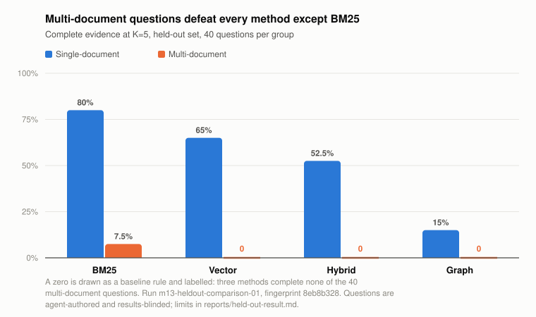

GraphRAG Bench measures it over 30 research papers. Four retrieval methods compete under one shared token budget, so no method wins by reading more, and only retrieval is scored — did the method put the required evidence in front of the model.
The answer, on an 80-question held-out set run once: no.

On the 40 questions needing two documents, dense retrieval, graph traversal and rank fusion each complete zero. BM25 completes 3 and is the only method that completes any. Graph retrieval underperforms vector retrieval everywhere, and both lose to keyword search.
| Method | K=5 | K=10 | Single-doc K=5 | Multi-doc K=5 |
|---|
test bundle without an explicit opt-in.This is the real run, not a demo. Pick a question to see the evidence it required and the passages each method returned. Green means the passage was one the question needed.
The graph held 111 assertions extracted from 6,996 chunks by an extractor recovering 2 of 6 sampled facts, so the graph arm measures that extractor as much as the idea. BM25 beating dense retrieval is a known result, demonstrated by BEIR — one of the 30 papers in this corpus. One corpus, one encoder, one budget. Seventy of the 80 questions have had no human read them.
Run , split , fingerprint
. Source and full reports:
github.com/KayDee6070/graphrag-bench